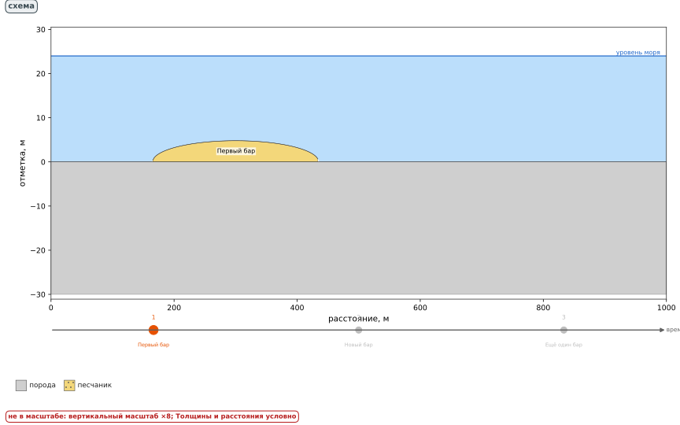
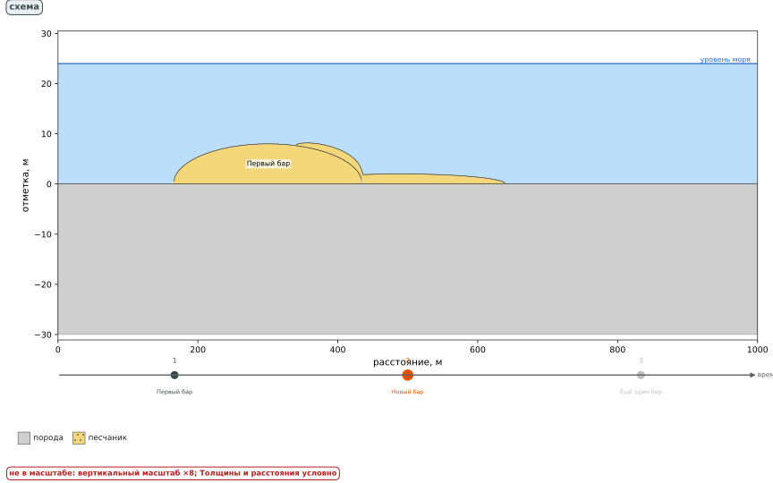
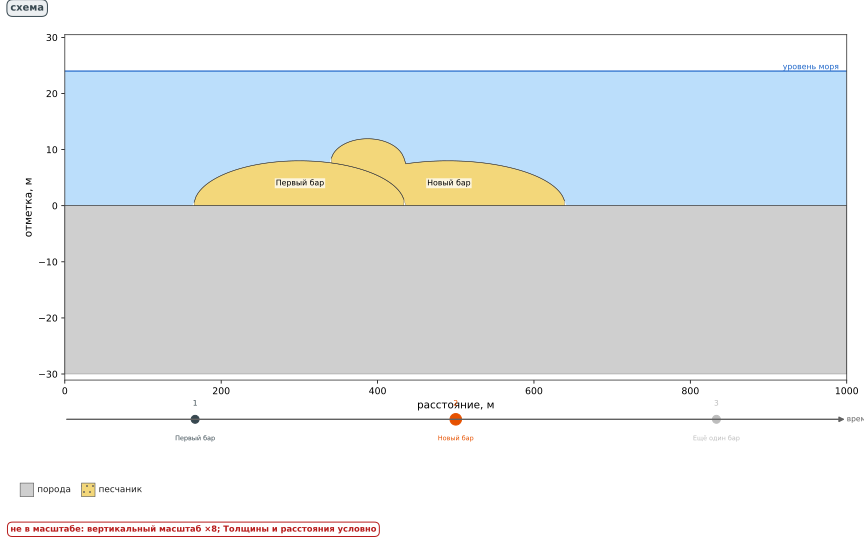
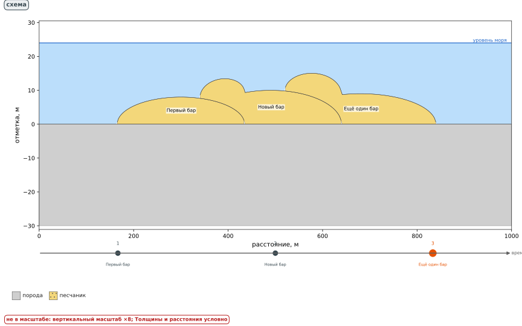
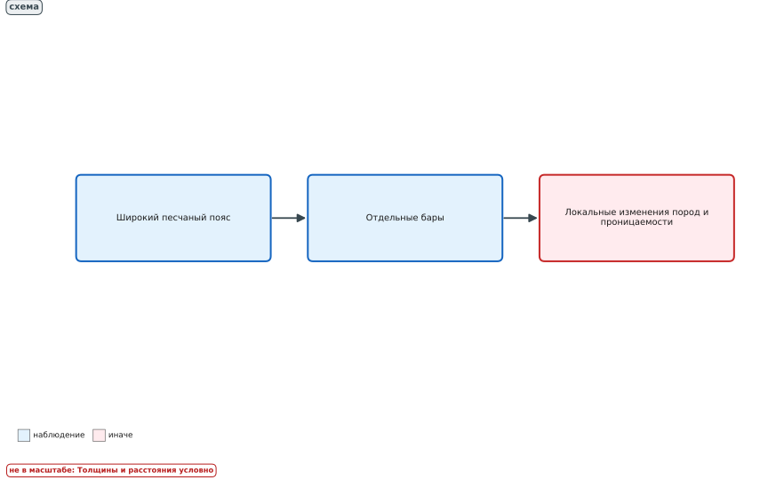

Много отдельных баров могут сложиться в широкий песчаный пояс.
Общий контур пояса не гарантирует неизменных свойств даже внутри одного бара.
Пороговая идея. Широкий песчаный пояс может состоять из отдельных неоднородных тел. модель
Анимация: как это происходит





1 / 6
Накапливается песок первого бара.
Не в масштабе: Толщины и расстояния (условно). Допущения: Геометрия и шкалы, если есть, условные; схема не оцифрована из книги..
Как это работает
Механизм
проницаемость: Способность породы пропускать флюид. При проградации устьевые русла неоднократно ветвились. За длительное время образовался широкий пласт из множества баров. Пласт вытянут вдоль простирания. Даже внутри отдельного бара фации и проницаемость меняются и могут прерываться. стр. 416
«Over a long period of time, repeated bifurcation of distributary mouth channels during progradation led to the development of a broad, strike-parallel sheet composed of numerous mouth bars»
«However, across a single bar, there are discontinuities in facies and permeability»
схема
Рукава многократно ветвятся → Накапливаются устьевые бары → Образуется широкий пояс.
Класс B · схема · нарисовано кодом · стр. 416
Что это значит для данных по книге
Различают песчаный пояс из многих баров и неоднородности внутри отдельного бара.
Вход
При проградации повторное ветвление устьевых русел за длительное время создало широкий пласт из множества баров, вытянутый вдоль простирания.
Выход
Даже внутри отдельного бара фации и проницаемость меняются и могут прерываться.
Где ломается
Большой масштаб песчаного тела не гарантирует, что его свойства непрерывны на меньшем масштабе.
Где здесь ручной труд специалиста
Входные данные
При проградации повторное ветвление устьевых русел за длительное время создало широкий пласт из множества баров, вытянутый вдоль простирания.
Ручные шаги
Различают песчаный пояс из многих баров и неоднородности внутри отдельного бара.
Точки суждения
Большой масштаб песчаного тела не гарантирует, что его свойства непрерывны на меньшем масштабе.
Время
Глава не оценивает трудозатраты; время зависит от объёма проверки и качества исходных наблюдений.
Типичные ошибки
Перенести наблюдение из конкретного примера на всё месторождение без проверки.
Аналогия модель
Общий контур полигона не показывает разрывы между внутренними компонентами.
Где аналогия перестаёт работать: Связь потоков зависит от реальных свойств породы и не читается как формальная связность полигона.
Новые понятия
ветвление русла (channel bifurcation)
Разделение потока по расходящимся рукавам стр. 416модель
устьевой бар (mouth bar)
Тело осадка у выхода рукава стр. 416модель
простирание (strike)
Направление вдоль линии пересечения наклонной поверхности с горизонталью стр. 416модель
проницаемость (permeability)
Способность породы пропускать флюид стр. 416модель
фация (facies)
Отложения, выделенные по характерным признакам стр. 416модель
Проверь себя
Один ответ
Верный ответ: Много баров образовались при повторном ветвлении русел
Все утверждения шага с дословной цитатой автора и страницей книги (по PDF).
При проградации повторное ветвление устьевых русел за длительное время создало широкий пласт из множества баров, вытянутый вдоль простирания. наблюдение
«Over a long period of time, repeated bifurcation of distributary mouth channels during progradation led to the development of a broad, strike-parallel sheet composed of numerous mouth bars»
Даже внутри отдельного бара фации и проницаемость меняются и могут прерываться. наблюдение
«However, across a single bar, there are discontinuities in facies and permeability»
Исходный текст урока
Стр. 416 · 9.4.1 Processes and Deposits
Over a long period of time, repeated bifurcation of distributary mouth channels during progradation led to the development of a broad, strike-parallel sheet composed of numerous mouth bars. However, across a single bar, there are discontinuities in facies and permeability.